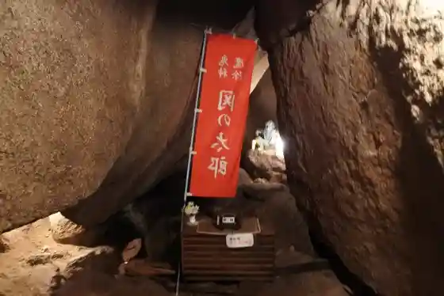

Mino Ko Iori Mankai Do
Mizunami, Gifu · 0572-68-3131 · Official / source link
Oniiwa Park no Autumn Leaves
Mizunami, Gifu · 0574-67-0285 · Official / source link
Saiensuwarudo
Mizunami, Gifu · 0572-66-1151 · Official / source link
Fuku Oni Densetsu no Chi ! Oniiwa Park
Mizunami, Gifu · 0574-67-0285 · Official / source link

Mino Kabuki Museum (Aioi Za)
Mizunami, Gifu · 0572-69-2126 · Official / source link
Nakasendo Sai Kyu Te Yado
Mizunami, Gifu · 0572-68-2111 · Official / source link
Nakasendo Biwa Toge
Mizunami, Gifu · 0572-68-2111 · Official / source link
Mizunami Kaseki Museum
Mizunami, Gifu · 0572-68-7710 · Official / source link
Mizunami Toji Museum
Mizunami, Gifu · 0572-67-2506 · Official / source link
Ichinose Hirota Kinen Art Museum
Mizunami, Gifu · 0572-68-9400 · Official / source link
Sakura Do Kusurishi
Mizunami, Gifu · 0572-68-2111 · Official / source link
Gorufu no Town Mizunami
Mizunami, Gifu · 0572-68-2111 · Official / source link
Sekaiichi no Mino Yako Ma Inu
Mizunami, Gifu · Official / source link
Sekaiichi no Cha Tsubo (Hojo no Tsubo)
Mizunami, Gifu · Official / source link
Ryu Gin Kyo
Mizunami, Gifu · 0572-63-0015 · Official / source link
Tsuitachi City Ba Hachiman Shrine
Mizunami, Gifu · Official / source link
Toki Yorisada no Haka
Mizunami, Gifu · Official / source link
Tsuru Ke Castle Ruins
Mizunami, Gifu · Official / source link
Sakanami Shrine
Mizunami, Gifu · Official / source link
Kaigen In
Mizunami, Gifu · Official / source link
Meihaku Tera Gorin to
Mizunami, Gifu · Official / source link
Kotoku Tera
Mizunami, Gifu · Official / source link
Ozato Castle Ruins
Mizunami, Gifu · Official / source link
Kyu Morikawa Kun Yukiie House (Marumori)
Mizunami, Gifu · Official / source link
Wakaba (Kabu)
Mizunami, Gifu · 0572-68-3168 · Official / source link
Chawan Ya Mizunami
Mizunami, Gifu · 0572-56-0203 · Official / source link
Oniiwa Park Maboroshi Falls
Mizunami, Gifu · 0574-67-0285 · Official / source link
Oni no Itto Iwa Renge Iwa
Mizunami, Gifu · 0574-67-0285 · Official / source link
Nakasendo Dai Shu Yado
Mizunami, Gifu · 0572-68-2111 · Official / source link